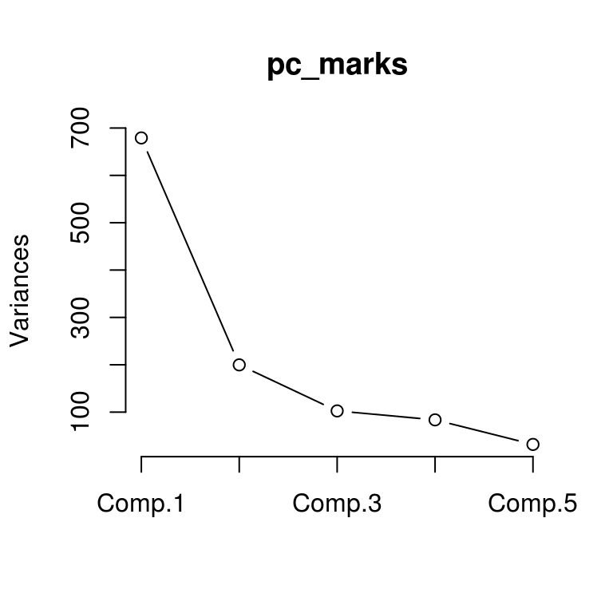
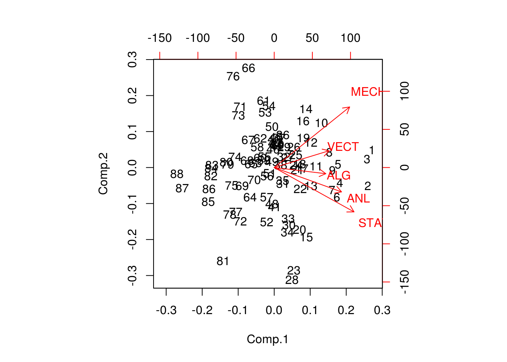
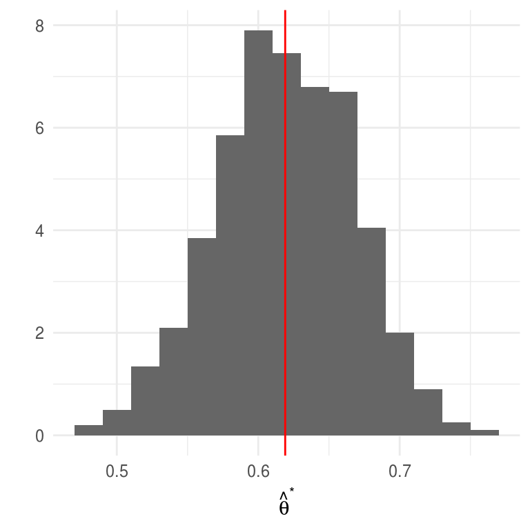

6.2 El estimador bootstrap del error estándar
Entonces, los pasos para calcular estimador bootstrap del error estándar son:
Tenemos una muestra aleatoria \(\textbf{x}=(x_1,x_2,...,x_n)\) proveniente de una distribución de probabilidad desconocida \(P\),
Seleccionamos muestras aleatorias con reemplazo de la distribución empírica.
Calculamos la estadística de interés para cada muestra: \[\hat{\theta}=s(\textbf{x})\] la estimación puede ser la estimación plug-in \(t(P_n)\) pero también puede ser otra.
La distribución de la estadística es la distribución bootstrap, y el estimador bootstrap del error estándar es la desviación estándar de la distribución bootstrap.
dist_empirica <- data_frame(id = 1:30, obs = samples$sims[[1]])
dist_empirica_plot <- ggplot(dist_empirica, aes(x = obs)) +
geom_histogram(binwidth = 2, alpha = 0.5, fill = "darkgray") +
geom_vline(aes(color = "mu", xintercept = 5), alpha = 0.5) +
geom_vline(aes(xintercept = samples$x_bar[1], color = "x_bar"),
alpha = 0.8, linetype = "dashed") +
xlim(-15, 20) +
geom_vline(xintercept = 5, color = "red", alpha = 0.5) +
labs(x = "", subtitle = expression("Distribución empírica"~P[n])) +
scale_colour_manual(values = c('mu' = 'red', 'x_bar' = 'blue'), name = '',
labels = c(expression(mu), expression(bar(x))))
samples_boot <- data_frame(sample_boot = 1:3) %>%
mutate(
sims_boot = rerun(3, sample(dist_empirica$obs, replace = TRUE)),
x_bar_boot = map_dbl(sims_boot, mean))
muestras_boot_plot <- samples_boot %>%
unnest() %>%
ggplot(aes(x = sims_boot)) +
geom_histogram(binwidth = 2, alpha = 0.5, fill = "darkgray") +
geom_vline(aes(xintercept = samples$x_bar[1]), color = "blue",
linetype = "dashed", alpha = 0.8) +
geom_vline(xintercept = 5, color = "red", alpha = 0.5) +
geom_segment(aes(x = x_bar_boot, xend = x_bar_boot, y = 0, yend = 0.8),
color = "black") +
xlim(-15, 20) +
facet_wrap(~ sample_boot) +
geom_text(aes(x = x_bar_boot, y = 0.95, label = "bar(x)^'*'"),
parse = TRUE, color = "black", alpha = 0.3, hjust = 1) +
labs(x = "", subtitle = "Muestras bootstrap")
boot_dist <- data_frame(sample = 1:10000) %>%
mutate(
sims_boot = rerun(10000, sample(dist_empirica$obs, replace = TRUE)),
mu_hat_star = map_dbl(sims_boot, mean))
boot_muestral_plot <- ggplot(boot_dist, aes(x = mu_hat_star)) +
geom_histogram(alpha = 0.5, fill = "darkgray") +
labs(x = "",
subtitle = expression("Distribución bootstrap de "~hat(mu)^'*')) +
geom_vline(xintercept = 5, color = "red", alpha = 0.5) +
geom_vline(aes(xintercept = samples$x_bar[1]), color = "blue",
linetype = "dashed", alpha = 0.8)
(dist_empirica_plot | plot_spacer()) / (muestras_boot_plot | boot_muestral_plot) 
Describamos la notación y conceptos:
Definimos una muestra bootstrap como una muestra aleatoria de tamaño \(n\) que se obtiene de la distribución empírica \(P_n\) y la denotamos \[\textbf{x}^* = (x_1^*,...,x_n^*).\]
La notación de estrella indica que \(\textbf{x}^*\) no son los datos \(\textbf{x}\) sino una versión de remuestreo de \(\textbf{x}\).
Otra manera de frasearlo: Los datos bootsrtap \(x_1^*,...,x_n^*\) son una muestra aleatoria de tamaño \(n\) seleccionada con reemplazo de la población de \(n\) objetos \((x_1,...,x_n)\).
A cada muestra bootstrap \(\textbf{x}^*\) le corresponde una replicación \(\hat{\theta}^*=s(\textbf{x}^*).\)
el estimador bootstrap de \(se_P(\hat{\theta})\) se define como:
\[se_{P_n}(\hat{\theta}^*)\]
en otras palabras, la estimación bootstrap de \(se_P(\hat{\theta})\) es el error estándar de \(\hat{\theta}\) para conjuntos de datos de tamaño \(n\) seleccionados de manera aleatoria de \(P_n\).
La fórmula \(se_{P_n}(\hat{\theta}^*)\) no existe para casi ninguna estimación diferente de la media, por lo que recurrimos a la técnica computacional bootstrap:
Algoritmo bootstrap para estimar errores estándar
Selecciona \(B\) muestras bootstrap independientes: \[\textbf{x}^{*1},..., \textbf{x}^{*B}\].
Evalúa la replicación bootstrap correspondiente a cada muestra bootstrap: \[\hat{\theta}^{*b}=s(\textbf{x}^{*b})\] para \(b=1,2,...,B.\)
Estima el error estándar \(se_P(\hat{\theta})\) usando la desviación estándar muestral de las \(B\) replicaciones: \[\hat{se}_B = \bigg\{\frac{\sum_{b=1}^B[\hat{\theta}^{*}(b)-\hat{\theta}^*(\cdot)]^2 }{B-1}\bigg\}^{1/2}\]
Notemos que:
La estimación bootstrap de \(se_{P}(\hat{\theta})\), el error estándar de una estadística \(\hat{\theta}\), es un estimador plug-in que usa la función de distribución empírica \(P_n\) en lugar de la distribución desconocida \(P\).
Conforme el número de replicaciones \(B\) aumenta \[\hat{se}_B\approx se_{P_n}(\hat{\theta})\] este hecho equivale a decir que la desviación estándar empírica se acerca a la desviación estándar poblacional conforme crece el número de muestras. La población en este caso es la población de valores \(\hat{\theta}^*=s(x^*)\).
Al estimador de bootstrap ideal \(se_{P_n}(\hat{\theta})\) y su aproximación \(\hat{se}_B\) se les denota estimadores bootstrap no paramétricos ya que estan basados en \(P_n\), el estimador no paramétrico de la población \(P\).
Ejemplo: Error estándar bootstrap de una media
mediaBoot <- function(x){
# x: variable de interés
# n: número de replicaciones bootstrap
n <- length(x)
muestra_boot <- sample(x, size = n, replace = TRUE)
mean(muestra_boot) # replicacion bootstrap de theta_gorro
}
thetas_boot <- rerun(10000, mediaBoot(primaria_muestra$esp_3)) %>% flatten_dbl()
sd(thetas_boot)
#> [1] 3.8618y se compara con \(\hat{se}(\bar{x})\) (estimador plug-in del error estándar):
se <- function(x) sqrt(sum((x - mean(x)) ^ 2)) / length(x)
se(primaria_muestra$esp_3)
#> [1] 3.8466Nota: Conforme \(B\) aumenta \(\hat{se}_{B}(\bar{x})\to \{\sum_{i=1}^n(x_i - \bar{x})^2 / n \}^{1/2}\), se demuestra con la ley débil de los grandes números.
 Considera el coeficiente de correlación muestral
entre la calificación de \(y=\)esp_3 y la de \(z=\)esp_6:
\(\hat{corr}(y,z)=0.9\). ¿Qué tan precisa es esta estimación?
Considera el coeficiente de correlación muestral
entre la calificación de \(y=\)esp_3 y la de \(z=\)esp_6:
\(\hat{corr}(y,z)=0.9\). ¿Qué tan precisa es esta estimación?
Variación en distribuciones bootstrap
En el proceso de estimación bootstrap hay dos fuentes de variación pues:
La muestra original se selecciona con aleatoriedad de una población.
Las muestras bootstrap se seleccionan con aleatoriedad de la muestra original. Esto es: La estimación bootstrap ideal es un resultado asintótico \(B=\infty\), en esta caso \(\hat{se}_B\) iguala la estimación plug-in \(se_{P_n}\).
En el proceso de bootstrap podemos controlar la variación del sgundo aspecto, conocida como implementación de muestreo Monte Carlo, y la variación Monte Carlo decrece conforme incrementamos el número de muestras.
Podemos eliminar la variación Monte Carlo si seleccionamos todas las posibles muestras con reemplazo de tamaño \(n\), hay \({2n-1}\choose{n}\) posibles muestras y si seleccionamos todas obtenemos \(\hat{se}_\infty\) (bootstrap ideal), sin embargo, en la mayor parte de los problemas no es factible proceder así.
Entonces, ¿cuántas muestras bootstrap?
Incluso un número chico de replicaciones bootstrap, digamos \(B=25\) es informativo, y \(B=50\) con frecuencia es suficiente para dar una buena estimación de \(se_P(\hat{\theta})\) (Efron and Tibshirani (1993)).
Cuando se busca estimar error estándar Hesterberg (2015) recomienda \(B=1000\) muestras, o \(B=10,000\) muestras dependiendo la presición que se busque.
seMediaBoot <- function(x, B){
thetas_boot <- rerun(B, mediaBoot(x)) %>% flatten_dbl()
sd(thetas_boot)
}
B_muestras <- data_frame(n_sims = c(5, 25, 50, 100, 200, 400, 1000, 1500, 3000,
5000, 10000, 20000)) %>%
mutate(est = map_dbl(n_sims, ~seMediaBoot(x = primaria_muestra$esp_3, B = .)))
B_muestras
#> # A tibble: 12 x 2
#> n_sims est
#> <dbl> <dbl>
#> 1 5 2.44
#> 2 25 3.41
#> 3 50 3.51
#> 4 100 3.91
#> 5 200 3.51
#> 6 400 3.95
#> 7 1000 4.03
#> 8 1500 3.79
#> 9 3000 3.86
#> 10 5000 3.88
#> 11 10000 3.83
#> 12 20000 3.86Ejemplo componentes principales: calificaciones en exámenes
Los datos marks (Mardia, Kent y Bibby, 1979) contienen los puntajes de 88 estudiantes en 5 pruebas: mecánica, vectores, álgebra, análisis y estadística. Cada renglón corresponde a la calificación de un estudiante en cada prueba.
marks <- read_csv("data/marks.csv")
#> Parsed with column specification:
#> cols(
#> id = col_integer(),
#> MECH = col_integer(),
#> VECT = col_integer(),
#> ALG = col_integer(),
#> ANL = col_integer(),
#> STAT = col_integer()
#> )
glimpse(marks)
#> Observations: 88
#> Variables: 6
#> $ id <int> 1, 2, 3, 4, 5, 6, 7, 8, 9, 10, 11, 12, 13, 14, 15, 16, 17...
#> $ MECH <int> 77, 63, 75, 55, 63, 53, 51, 59, 62, 64, 52, 55, 50, 65, 3...
#> $ VECT <int> 82, 78, 73, 72, 63, 61, 67, 70, 60, 72, 64, 67, 50, 63, 5...
#> $ ALG <int> 67, 80, 71, 63, 65, 72, 65, 68, 58, 60, 60, 59, 64, 58, 6...
#> $ ANL <int> 67, 70, 66, 70, 70, 64, 65, 62, 62, 62, 63, 62, 55, 56, 5...
#> $ STAT <int> 81, 81, 81, 68, 63, 73, 68, 56, 70, 45, 54, 44, 63, 37, 7...
marks <- select(marks, -id)Entonces un análisis de componentes principales proseguiría como sigue:
pc_marks <- princomp(marks)
summary(pc_marks)
#> Importance of components:
#> Comp.1 Comp.2 Comp.3 Comp.4 Comp.5
#> Standard deviation 26.06114 14.13557 10.127604 9.147061 5.638077
#> Proportion of Variance 0.61912 0.18214 0.093497 0.076269 0.028977
#> Cumulative Proportion 0.61912 0.80126 0.894755 0.971023 1.000000
loadings(pc_marks)
#>
#> Loadings:
#> Comp.1 Comp.2 Comp.3 Comp.4 Comp.5
#> MECH 0.505 0.749 0.300 0.296
#> VECT 0.368 0.207 -0.416 -0.783 0.189
#> ALG 0.346 -0.145 -0.924
#> ANL 0.451 -0.301 -0.597 0.518 0.286
#> STAT 0.535 -0.548 0.600 -0.176 0.151
#>
#> Comp.1 Comp.2 Comp.3 Comp.4 Comp.5
#> SS loadings 1.0 1.0 1.0 1.0 1.0
#> Proportion Var 0.2 0.2 0.2 0.2 0.2
#> Cumulative Var 0.2 0.4 0.6 0.8 1.0
plot(pc_marks, type = "lines")
biplot(pc_marks)
Los cálculos de un análisis de componentes principales involucran la matriz de covarianzas empírica \(G\) (estimaciones plug-in)
\[G_{jk} = \frac{1}{88}\sum_{i=1}^88(x_{ij}-\bar{x_j})(x_{ik}-\bar{x_k})\]
para \(j,k=1,2,3,4,5\), y donde \(\bar{x_j} = \sum_{i=1}^88 x_{ij} / 88\) (la media de la i-ésima columna).
G <- cov(marks) * 87 / 88
G
#> MECH VECT ALG ANL STAT
#> MECH 302.29 125.777 100.43 105.065 116.071
#> VECT 125.78 170.878 84.19 93.597 97.887
#> ALG 100.43 84.190 111.60 110.839 120.486
#> ANL 105.07 93.597 110.84 217.876 153.768
#> STAT 116.07 97.887 120.49 153.768 294.372Los pesos y las componentes principales no son mas que los eigenvalores y eigenvectores de la matriz de covarianzas \(G\), estos se calculan a través de una serie de de manipulaciones algebraicas que requieren cálculos del orden de p^3 (cuando G es una matriz de tamaño p\(\times\)p).
eigen_G <- eigen(G)
lambda <- eigen_G$values
v <- eigen_G$vectors
lambda
#> [1] 679.183 199.814 102.568 83.669 31.788
v
#> [,1] [,2] [,3] [,4] [,5]
#> [1,] -0.50545 0.748748 0.29979 0.2961843 -0.079394
#> [2,] -0.36835 0.207403 -0.41559 -0.7828882 -0.188876
#> [3,] -0.34566 -0.075908 -0.14532 -0.0032363 0.923920
#> [4,] -0.45112 -0.300888 -0.59663 0.5181397 -0.285522
#> [5,] -0.53465 -0.547782 0.60028 -0.1757320 -0.151232- Proponemos el siguiente modelo simple para puntajes correlacionados:
\[\textbf{x}_i = Q_i \textbf{v}\]
donde \(\textbf{x}_i\) es la tupla de calificaciones del i-ésimo estudiante, \(Q_i\) es un número que representa la habilidad del estudiante y \(\textbf{v}\) es un vector fijo con 5 números que aplica a todos los estudiantes. Si este modelo simple fuera cierto, entonces únicamente el \(\hat{\lambda}_1\) sería positivo y \(\textbf{v} = \hat{v}_1\). Sea \[\hat{\theta}=\sum_{i=1}^5\hat{\lambda}_i\] el modelo propuesto es equivalente a \(\hat{\theta}=1\), inculso si el modelo es correcto, no esperamos que \(\hat{\theta}\) sea exactamente uno pues hay ruido en los datos.
theta_hat <- lambda[1]/sum(lambda)
theta_hat
#> [1] 0.61912El valor de \(\hat{\theta}\) mide el porcentaje de la varianza explicada en la primer componente principal, ¿qué tan preciso es \(\hat{\theta}\)? La complejidad matemática en el cálculo de \(\hat{\theta}\) es irrelevante siempre y cuando podamos calcular \(\hat{\theta}^*\) para una muestra bootstrap, en esta caso una muestra bootsrtap es una base de datos de 88$$5 \(\textbf{X}^*\), donde las filas \(\textbf{x_i}^*\) de \(\textbf{X}^*\) son una muestra aleatoria de tamaño 88 de la verdadera matriz de datos.
pc_boot <- function(){
muestra_boot <- sample_n(marks, size = 88, replace = TRUE)
G <- cov(muestra_boot) * 87 / 88
eigen_G <- eigen(G)
theta_hat <- eigen_G$values[1] / sum(eigen_G$values)
}
B <- 1000
thetas_boot <- rerun(B, pc_boot()) %>% flatten_dbl()Veamos un histograma de las replicaciones de \(\hat{\theta}\):
ggplot(data_frame(theta = thetas_boot)) +
geom_histogram(aes(x = theta, y = ..density..), binwidth = 0.02, fill = "gray40") +
geom_vline(aes(xintercept = mean(theta)), color = "red") +
labs(x = expression(hat(theta)^"*"), y = "")
Estas tienen un error estándar
theta_se <- sd(thetas_boot)
theta_se
#> [1] 0.048405y media
mean(thetas_boot)
#> [1] 0.61904la media de las replicaciones es muy similar a la estimación \(\hat{\theta}\), esto indica que \(\hat{\theta}\) es cercano a insesgado.
- El eigenvetor \(\hat{v}_1\) correspondiente al mayor eigenvalor se conoce como primera componente de \(G\), supongamos que deseamos resumir la calificación de los estudiantes mediante un único número, entonces la mejor combinación lineal de los puntajes es
\[y_i = \sum_{k = 1}^5 \hat{v}_{1k}x_{ik}\]
esto es, la combinación lineal que utiliza las componentes de \(\hat{v}_1\) como ponderadores. Si queremos un resumen compuesto por dos números \((y_i,z_i)\), la segunda combinación lineal debería ser:
\[z_i = \sum_{k = 1}^5 \hat{v}_{2k}x_{ik}\]
 Las componentes principales \(\hat{v}_1\) y
\(\hat{v}_2\) son estadísticos, usa bootstrap para dar una medición de su
variabilidad calculando el error estándar de cada una.
Las componentes principales \(\hat{v}_1\) y
\(\hat{v}_2\) son estadísticos, usa bootstrap para dar una medición de su
variabilidad calculando el error estándar de cada una.
Más alla de muestras aleatorias simples
Introdujimos el bootstrap en el contexto de muestras aleatorias, esto es, suponiendo que las observaciones son independientes; en este escenario basta con aproximar la distribución desconocida \(P\) usando la dsitribución empírica \(P_n\), y el cálculo de los estadísticos es inmediato. Hay casos en los que el mecanismo que generó los datos es más complicado, por ejemplo, cuando tenemos dos muestras, en diseños de encuestas complejas o en series de tiempo.
Ejemplo: Dos muestras
En el ejemplo de experimentos clínicos de aspirina y ataques de de corazón, podemos pensar el modelo probabilístico \(P\) como compuesto por dos distribuciones de probabilidad \(G\) y \(Q\) una correspondiente al grupo control y otra al grupo de tratamiento, entonces las observaciones de cada grupo provienen de distribuciones distintas y el método bootstrap debe tomar en cuenta esto al generar las muestras, en este caso implica seleccionar muesreas de manera independiente dentro de cada grupo.
Ejemplo: Bootstrap en muestreo de encuestas
La necesidad de estimaciones confiables junto con el uso eficiente de recursos conllevan a diseños de muestras complejas. Estos diseños típicamente usan las siguientes técnicas: muestreo sin reemplazo de una población finita, muestreo sistemático, estratificación, conglomerados, ajustes a no-respuesta, postestratificación. Como consecuencia, los valores de la muestra suelen no ser independientes.
La complejidad de los diseños de encuestas conlleva a que el cálculo de errores estándar sea muy complicado, para atacar este problema hay dos técnicas básicas: 1) un enfoque analítico usando linearización, 2) métodos de remuestreo como bootstrap. El incremento en el poder de cómputo ha favorecido los métodos de remuestreo pues la linearización requiere del desarrollo de una fórmula para cada estimación y supuestos adicionales para simplificar.
En 1988 Rao and Wu (1988) propusieron un método de bootstrap para diseños estratificados multietápicos con reemplazo de UPMs que describimos a continuación.
ENIGH. Usaremos como ejemplo la Encuesta Nacional de Ingresos y Gastos de los Hogares, ENIGH 2014 (INEGI 2014), esta encuesta usa un diseño de conglomerados estratificado.
Antes de proceder a bootstrap debemos entender como se seleccionaron los datos, esto es, el diseño de la muestra:
Unidad primaria de muestreo (UPM). Las UPMs están constituidas por agrupaciones de viviendas. Se les denomina unidades primarias pues corresponden a la primera etapa de selección, las unidades secundarias (USMs) serían los hogares.
Estratificación. Los estratos se construyen en base a estado, ámbito (urbano, complemento urbano, rural), características sociodemográficas de los habitantes de las viviendas, características físicas y equipamiento. El proceso de estratificación resulta en 888 subestratos en todo el ámbito nacional.
La selección de la muestra es independiente para cada estrato, y una vez que se obtiene la muestra se calculan los factores de expansión que reflejan las distintas probabilidades de selección. Después se llevan a cabo ajustes por no respuesta y por proyección (calibración), esta última busca que distintos dominios de la muestra coincidan con la proyección de población de INEGI.
concentrado_hogar <- read_csv("data/concentradohogar.csv")
concentrado_hogar
#> # A tibble: 19,479 x 132
#> folioviv foliohog ubica_geo ageb tam_loc est_socio est_dis upm
#> <chr> <int> <chr> <chr> <int> <int> <chr> <chr>
#> 1 0100008… 1 010010001 028-6 1 4 005 00670
#> 2 0100008… 1 010010001 028-6 1 4 005 00670
#> 3 0100008… 1 010010001 028-6 1 4 005 00670
#> 4 0100008… 1 010010001 028-6 1 4 005 00670
#> 5 0100010… 1 010010001 028-6 1 4 005 00600
#> 6 0100010… 1 010010001 028-6 1 4 005 00600
#> 7 0100010… 1 010010001 028-6 1 4 005 00600
#> 8 0100010… 1 010010001 028-6 1 4 005 00600
#> 9 0100010… 1 010010001 028-6 1 4 005 00600
#> 10 0100018… 1 010010001 029-0 1 3 004 00570
#> # ... with 19,469 more rows, and 124 more variables: factor_hog <int>,
#> # clase_hog <int>, sexo_jefe <int>, edad_jefe <int>, educa_jefe <chr>,
#> # tot_integ <int>, hombres <int>, mujeres <int>, mayores <int>,
#> # menores <int>, p12_64 <int>, p65mas <int>, ocupados <int>,
#> # percep_ing <int>, perc_ocupa <int>, ing_total <dbl>, ing_cor <dbl>,
#> # ing_mon <dbl>, trabajo <dbl>, sueldos <dbl>, horas_extr <dbl>,
#> # comisiones <dbl>, otra_rem <dbl>, negocio <dbl>, noagrop <dbl>,
#> # industria <dbl>, comercio <dbl>, servicios <dbl>, agrope <dbl>,
#> # agricolas <dbl>, pecuarios <dbl>, reproducc <int>, pesca <int>,
#> # otros_trab <dbl>, rentas <dbl>, utilidad <dbl>, arrenda <dbl>,
#> # transfer <dbl>, jubilacion <dbl>, becas <dbl>, donativos <dbl>,
#> # remesas <dbl>, bene_gob <dbl>, otros_ing <dbl>, gasto_nom <dbl>,
#> # autoconsum <dbl>, remu_espec <dbl>, transf_esp <dbl>,
#> # transf_hog <dbl>, trans_inst <dbl>, estim_alqu <dbl>,
#> # percep_tot <dbl>, percep_mon <dbl>, retiro_inv <dbl>, prestamos <dbl>,
#> # otras_perc <dbl>, erogac_nom <dbl>, gasto_tot <dbl>, gasto_cor <dbl>,
#> # gasto_mon <dbl>, alimentos <dbl>, ali_dentro <dbl>, cereales <dbl>,
#> # carnes <dbl>, pescado <dbl>, leche <dbl>, huevo <dbl>, aceites <dbl>,
#> # tuberculo <dbl>, verduras <dbl>, frutas <dbl>, azucar <dbl>,
#> # cafe <dbl>, especias <dbl>, otros_alim <dbl>, bebidas <dbl>,
#> # ali_fuera <dbl>, tabaco <dbl>, vesti_calz <dbl>, vestido <dbl>,
#> # calzado <dbl>, vivienda <dbl>, alquiler <dbl>, pred_cons <dbl>,
#> # agua <dbl>, energia <dbl>, limpieza <dbl>, cuidados <dbl>,
#> # utensilios <dbl>, enseres <dbl>, salud <dbl>, atenc_ambu <dbl>,
#> # hospital <dbl>, medicinas <dbl>, transporte <dbl>, publico <dbl>,
#> # foraneo <dbl>, adqui_vehi <dbl>, mantenim <dbl>, refaccion <dbl>, …
# seleccionar variable de ingreso corriente
hogar <- concentrado_hogar %>%
mutate(jefe_hombre = sexo_jefe == 1) %>%
select(folioviv, foliohog, est_dis, upm, factor_hog, ing_cor, sexo_jefe, edad_jefe) %>%
group_by(est_dis) %>%
mutate(
n = n_distinct(upm), # número de upms por estrato
jefa_50 = (sexo_jefe == 2) & (edad_jefe > 50)
) %>%
ungroup()
head(hogar)
#> # A tibble: 6 x 10
#> folioviv foliohog est_dis upm factor_hog ing_cor sexo_jefe edad_jefe
#> <chr> <int> <chr> <chr> <int> <dbl> <int> <int>
#> 1 0100008… 1 005 00670 694 39787. 2 77
#> 2 0100008… 1 005 00670 694 19524. 1 64
#> 3 0100008… 1 005 00670 694 99258. 1 60
#> 4 0100008… 1 005 00670 694 87884. 1 79
#> 5 0100010… 1 005 00600 660 84427. 1 72
#> 6 0100010… 1 005 00600 660 232014. 1 67
#> # ... with 2 more variables: n <int>, jefa_50 <lgl>Para el cálculo de estadísticos debemos usar los factores de expansión, por ejemplo el ingreso trimestral total sería:
sum(hogar$factor_hog * hogar$ing_cor / 1000)
#> [1] 1257944071y ingreso trimestral medio (miles pesos)
sum(hogar$factor_hog * hogar$ing_cor / 1000) / sum(hogar$factor_hog)
#> [1] 39.719Veamos ahora como calcular el error estándar siguiendo el bootstrap de Rao y Wu:
- En cada estrato se seleccionan con reemplazo \(m_h\) UPMs de las \(n_h\) de la muestra original. Denotamos por \(m_{hi}^*\) el número de veces que se seleccionó la UPM \(i\) en el estrato \(h\) (de tal manera que \(\sum m_{hi}^*=m_h\)). Creamos una replicación del ponderador correspondiente a la \(k\)-ésima unidad (USM) como:
\[d_k^*=d_k \bigg[\bigg(1-\sqrt{\frac{m_h}{n_h - 1}}\bigg) + \bigg(\sqrt{\frac{m_h}{n_h - 1}}\frac{n_h}{m_h}m_{h}^*\bigg)\bigg]\]
donde \(d_k\) es el inverso de la probabilidad de selección. Si \(m_h<(n_h -1)\) todos los pesos definidos de esta manera serán no negativos. Calculamos el peso final \(w_k^*\) aplicando a \(d_k^*\) los mismos ajustes que se hicieron a los ponderadores originales.
Calculamos el estadístico de interés \(\hat{\theta}\) usando los ponderadores \(w_k^*\) en lugar de los originales \(w_k\).
Repetimos los pasos 1 y 2 \(B\) veces para obtener \(\hat{\theta}^{*1},\hat{\theta}^{*2},...,\hat{\theta}^{*B}\).
Calculamos el error estándar como: \[\hat{se}_B = \bigg\{\frac{\sum_{b=1}^B[\hat{\theta}^*(b)-\hat{\theta}^*(\cdot)]^2 }{B}\bigg\}^{1/2}\]
Podemos elegir cualquier valor de \(m_h \geq 1\), el más sencillo es elegir \(m_h=n_h-1\), en este caso: \[d_k^*=d_k \frac{n_h}{n_h-1}m_{hi}^*\] en este escenario las unidades que no se incluyen en la muestra tienen un valor de cero como ponderador. Si elegimos \(n_h \ne n_h-1\) las unidades que no están en la muestra tienen ponderador distinto a cero, si \(m_h=n_h\) el ponderador podría tomar valores negativos.
Implementemos el bootstrap de Rao y Wu a la ENIGH, usaremos \(m_h=n_h-1\)
# creamos una tabla con los estratos y upms
est_upm <- hogar %>%
distinct(est_dis, upm, n)
hogar_factor <- est_upm %>%
split(.$est_dis) %>% # dentro de cada estrato tomamos muestra (n_h-1)
map_df(~sample_n(., size = first(.$n) - 1, replace = TRUE)) %>%
add_count(upm) %>% # calculamos m_hi*
left_join(hogar, by = c("est_dis", "upm", "n")) %>%
mutate(factor_b = factor_hog * nn * n / (n - 1))
# unimos los pasos anteriores en una función para replicar en cada muestra bootstrap
svy_boot <- function(est_upm, hogar){
m_hi <- est_upm %>%
split(.$est_dis) %>%
map(~sample(.$upm, size = first(.$n) - 1, replace = TRUE)) %>%
flatten_chr() %>%
plyr::count() %>%
select(upm = x, m_h = freq)
m_hi %>%
mutate(upm = as.character(upm)) %>%
left_join(hogar, by = c("upm")) %>%
mutate(factor_b = factor_hog * m_h * n / (n - 1))
}
set.seed(1038984)
boot_rep <- rerun(500, svy_boot(est_upm, hogar))
# Aplicación a ingreso medio
media <- function(w, x) sum(w * x) / sum(w)
# La media es:
hogar %>%
summarise(media = media(factor_hog, ing_cor))
#> # A tibble: 1 x 1
#> media
#> <dbl>
#> 1 39719.Y el error estándar:
map_dbl(boot_rep, ~media(w = .$factor_b, x = .$ing_cor)) %>% sd()
#> [1] 946.01El método bootstrap está implementado en el paquete survey y más recientemente
en srvyr que es una versión tidy que utiliza las funciones en survey.
Podemos comparar nuestros resultados con la implementación en survey.
# 1. Definimos el diseño de la encuesta
library(survey)
library(srvyr)
enigh_design <- hogar %>%
as_survey_design(ids = upm, weights = factor_hog, strata = est_dis)
# 2. Elegimos bootstrap como el método para el cálculo de errores estándar
set.seed(7398731)
enigh_boot <- enigh_design %>%
as_survey_rep(type = "subbootstrap", replicates = 500)
# 3. Así calculamos la media
enigh_boot %>%
srvyr::summarise(mean_ingcor = survey_mean(ing_cor))
#> # A tibble: 1 x 2
#> mean_ingcor mean_ingcor_se
#> <dbl> <dbl>
#> 1 39719. 1008.
# cuantiles
svyquantile(~ing_cor, enigh_boot, quantiles = seq(0.1, 1, 0.1), interval.type = "quantile")
#> Statistic:
#> ing_cor
#> q0.1 10622
#> q0.2 14775
#> q0.3 18597
#> q0.4 22682
#> q0.5 27186
#> q0.6 32726
#> q0.7 40057
#> q0.8 51990
#> q0.9 76285
#> q1 4150377
#> SE:
#> ing_cor
#> q0.1 143.90
#> q0.2 165.40
#> q0.3 193.00
#> q0.4 218.38
#> q0.5 239.42
#> q0.6 347.55
#> q0.7 483.52
#> q0.8 768.62
#> q0.9 1322.12
#> q1 1318629.10Supongamos que queremos calcular la media para los hogares con jefe de familia mujer mayor a 50 años.
# Creamos datos con filter y repetimos lo de arriba
hogar_mujer <- filter(hogar, jefa_50)
est_upm_mujer <- hogar_mujer %>%
distinct(est_dis, upm, n)
# bootstrap
boot_rep_mujer <- rerun(500, svy_boot(est_upm_mujer, hogar_mujer))
# media y error estándar
hogar_mujer %>%
summarise(media = media(factor_hog, ing_cor))
#> # A tibble: 1 x 1
#> media
#> <dbl>
#> 1 35259.
# usamos bootstrap para calcular los errores estándar
map_dbl(boot_rep_mujer, ~media(w = .$factor_b, x = .$ing_cor)) %>% sd()
#> [1] 1788.6Comparemos con los resultados de srvyr. ¿qué pasa?
library(srvyr)
enigh_boot %>%
srvyr::group_by(jefa_50) %>%
srvyr::summarise(mean_ingcor = survey_mean(ing_cor))
#> # A tibble: 2 x 3
#> jefa_50 mean_ingcor mean_ingcor_se
#> <lgl> <dbl> <dbl>
#> 1 FALSE 40412. 949.
#> 2 TRUE 35259. 1988.Sub-poblaciones como “jefas de familia mayores a 50” se conocen como un dominio, esto es un subgrupo cuyo tamaño de muestra es aleatorio. Este ejemplo nos recalca la importancia de considerar el proceso en que se generó la muestra para calcular los errores estándar bootstrap.
map_dbl(boot_rep,
function(x){hm <- filter(x, jefa_50); media(w = hm$factor_b, x = hm$ing_cor)}) %>%
sd()
#> [1] 1965.4Resumiendo:
El bootstrap de Rao y Wu genera un estimador consistente y aproximadamente insesgado de la varianza de estadísticos no lineales y para la varianza de un cuantil.
Este método supone que la seleccion de UPMs es con reemplazo; hay variaciones del estimador bootstrap de Rao y Wu que extienden el método que acabamos de estudiar; sin embargo, es común ignorar este aspecto, por ejemplo Mach et al estudian las propiedades del estimador de varianza bootstrap de Rao y Wu cuando la muestra se seleccionó sin reemplazo.
Referencias
Efron, Bradley, and Robert J. Tibshirani. 1993. An Introduction to the Bootstrap. Monographs on Statistics and Applied Probability 57. Boca Raton, Florida, USA: Chapman & Hall/CRC.
Hesterberg, Tim C. 2015. “What Teachers Should Know About the Bootstrap: Resampling in the Undergraduate Statistics Curriculum.” The American Statistician 69 (4). Taylor & Francis:371–86. https://doi.org/10.1080/00031305.2015.1089789.
Rao, J. N. K., and C. F. J. Wu. 1988. “Resampling Inference with Complex Survey Data.” Journal of the American Statistical Association 83 (401). Taylor & Francis:231–41. https://doi.org/10.1080/01621459.1988.10478591.
INEGI. 2014. “Encuesta Nacional de Ingresos Y Gastos de Los Hogares (Enigh-2014). Diseño Muestral.” http://internet.contenidos.inegi.org.mx/contenidos/Productos/prod_serv/contenidos/espanol/bvinegi/productos/nueva_estruc/702825070359.pdf.